축산기사 (2021-09-12 기출문제)
1과목: 가축육종학
1. 공통선조가 C인 다음 가계도에서 A의 근교계수는 얼마인가? (단, FA=0이다.)
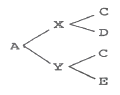
- 0.125
- 0.250
- 0.500
- 0.750
(정답률: 67%)

2. 선발차의 정의는?
- 선발된 개체들 중 암·수의 차이
- 선발된 개체와 도태된 개체의 수
- 선발된 개체의 암컷의 수
- 선발된 개체의 평균과 집단의 평균간 차이
(정답률: 89%)
3. 단위기간 당 유전적개량량을 증대시키는 방법이 아닌 것은?
- 세대간격을 최소화한다.
- 유전적변이를 최소화한다.
- 선발강도를 최대화한다.
- 신뢰도를 최대화한다.
(정답률: 75%)
4. 일반적으로 사료이용성이 좋고 발육이 좋은 3원 교잡종을 생산하기 위하여 가장 널리 쓰이는 종모돈 품종은?
- 요크셔종(Yorkshire)
- 랜드레이스종(Landrace)
- 햄프셔종(Hampshire)
- 듀록종(Duroc)
(정답률: 64%)
5. 소의 2배체(Diploid) 상태에서의 염색체 수로 옳은 것은?
- 35개
- 50개
- 60개
- 90개
(정답률: 83%)
6. 젖소의 산차별 산유량에서와 같이 같은 개체에 두 개의 다른 기록 사이의 상관 계수는?
- 반복력
- 유전력
- 유전상관
- 환경상관
(정답률: 68%)
7. 돼지의 능력검정에 이용되는 선발지수식에 일반적으로 포함되지 않는 것은?
- 체장
- 일당 중체량
- 등지방두께
- 사료효율
(정답률: 72%)
8. 한우의 개량 목표로 부적합한 것은?
- 산자수의 증가
- 이유 후 증체율의 향상
- 사료효율의 증진
- 도체의 품질 개선
(정답률: 82%)
9. Hardy-Weinberg 평형을 이루는 조건으로 옳은 것은?
- 작은 규모의 집단에서만 H-W 평형이 이루어진다.
- 선발이나 돌연변이 같은 유전자 변동 요인이 없어야 한다.
- 동류교배가 이루어져야 한다.
- 가급적 근친교배가 이루어져야 한다.
(정답률: 84%)
10. 육용계에서 생체중의 실현유전력은?
- 0.15~0.25
- 0.30~0.40
- 0.50~0.60
- 0.70~0.80
(정답률: 66%)
11. 가축의 발생 또는 발육과정에서 일정한 시기에 생리적 또는 물리적 결함을 초래하여 개체를 죽게 하는 유전자를 무엇이라 하는가?
- 복다유전자
- 동의유전자
- 치사유전자
- 보족유전자
(정답률: 89%)
12. 고기소에 있어서 유각적색(ppbb)인 헤어포드(Hereford)종과 무각흑색(PPBB)인 앵거스(Angus)종을 교배시키면 F1의 외모는 어떻게 발현되는가?
- 유각적색
- 유각흑색
- 무각적색
- 무각흑색
(정답률: 80%)
13. 후대검정 시 수컷 종축 딸의 평균유량이 6400kg이고, 이들 어미의 평균 유량은 6100kg이라 할 때 본 수컷의 종웅지수(sire index)는?
- 300kg
- 6250kg
- 6400kg
- 6700kg
(정답률: 67%)
14. 한우 당대검정우의 조건에 해당되지 않는 것은?
- 씨암소에서 태어난 생후 160일령 이전에 이유한 수송하지 일 것
- 등록기관에 부모가 혈통등록이상 등록되고, 유전자검사 결과 친자가 확인된 것
- 외모심사 평점이 60점 이상일 것
- 당대검정우나 당대검정우의 부모 또는 형제, 자매 중에서 선천성 기형이나 유전적 불량형질이 나타나지 않은 것
(정답률: 76%)
15. 다형질선발의 장점이 아닌 것은?
- 단형질선발보다 단일형질의 개량속도가 빨라진다.
- 동시에 여러 형질에 대한 개량을 효율적으로 할 수 있다.
- 실질적으로 총체적 경제 가치를 높일 수 있다.
- 많은 양의 정보를 이용할 수 있다.
(정답률: 80%)
16. 육우의 교잡 목적으로 틀린 것은?
- 번식능력, 생존율, 초기 성장 등에서 잡종강세를 이용하기 위하여
- 품종간 상보효과를 이용하기 위하여
- 강력유전현상을 이용하기 위하여
- 새로운 유전인자를 도입하여 유전적 변이를 크게 하기 위하여
(정답률: 66%)
17. 육우 개량에 이용되는 종료 윤환 교배의 장점에 대한 설명으로 가장 적절하지 않은 것은?
- 실용축으로 생산되는 송아지에서 100%의 잡종 강세 효과를 이용할 수 있다.
- 축군 대체에 소요되는 비용과 시설을 줄일 수 있다.
- 축군 대체용 종빈우를 생산하기 위하여 순종 교배를 할 필요가 없다.
- 어미 소와 송아지 모두에 있어 25%의 잡종 강세 효과를 이용할 수 있다.
(정답률: 60%)
18. 고기소에서 송아지 생산율이란?
- 우군 내 인공수정된 암소에 대한 이유된 송아지의 비율
- 우군 내 인공수정된 암소에 대한 출생된 송아지의 비율
- 우군 내 인공수정된 암소에 대한 출하된 송아지의 비율
- 출생된 송아지에 대한 이유된 송아지의 비율
(정답률: 62%)
19. 한우 발육능력과 가장 거리가 먼 형질은?
- 고기의 연도
- 이유시 체중
- 12개월령 체중
- 일당증체량
(정답률: 82%)
20. 젖소 개량 시 사용되는 예측차(PD:Predicted difference)란 무엇인가?
- 부피단위의 차이를 뜻한다.
- 무게단위의 차이를 뜻한다.
- 표현형의 차이를 뜻한다.
- 유전능력의 차이를 뜻한다.
(정답률: 66%)
2과목: 가축번식생리학
21. 가축의 암컷생식기 내에 주입된 정자가 난관을 통과하면서 나타나는 첨체반응(acrosome reaction)시 방출되는 효소로 옳은 것은?
- lipase, acrosin
- lipase, hyaluronidase
- protease, lipase
- hyaluronidase, acrosin
(정답률: 73%)
22. 정소상체의 기능이 아닌 것은?
- 정자의 저장
- 정자의 성숙
- 정자의 생산
- 정자의 운반
(정답률: 75%)
23. 다음 중 돼지의 정액 채취 방법으로 가장 많이 사용되는 것은?
- 전기 자극법
- 수압법
- 인공질법
- 콘돔법
(정답률: 69%)
24. 정자가 정액으로 사출되기 직전까지 저장되어 있는 곳은?
- 정낭선
- 정소상체 체부
- 정소상체 미부
- 정관 팽대부
(정답률: 67%)
25. 소의 명확한 발정 징후라고 볼 수 있는 것은?
- 식욕증가
- 행동의 안정상태 유지
- 착유소의 경우 유량 증가
- 암소나 수소의 승가 허용
(정답률: 80%)
26. 수정란 이식 기술의 산업적 이용에 관한 내용으로 잘못된 것은?
- 우수한 모계의 유전형질을 이어받은 자축을 단기간에 다수 생산할 수 있다.
- 가축의 개량과 능력검정 사업에 효과적으로 사용될 수 있다.
- 동일계 품종이 아니면 수정란 이식이 불가하므로 가축 도입에 이용되는 데는 제한성이 있다.
- 수정란 성감별 후 이식할 수가 있어 성별의 인위적 조절에도 유용하게 활용할 수 있다.
(정답률: 76%)
27. 성숙한 포유동물에서 배란 직전에 호르몬의 혈중농도가 급상승하여 배란을 유도하는 정(positive)의 피드백작용을 하는 난소 호르몬과 뇌하수체 호르몬을 올바르게 연결한 것은?
- 에스트로겐(estrogen) - 난포자극호르몬(FSH)
- 에스트로겐(estrogen) - 황체형성호르몬(LH)
- 프로게스테론(progesterone) - 난포자극호르몬(FSH)
- 프로게스테론(progesterone) - 황체형성호르몬(LH)
(정답률: 60%)
28. 수컷의 부생식선을 유지시키고 제2차 성징을 발현시킬 뿐만 아니라 정자의 형성에도 직접적으로 관여하는 호르몬은?
- 황체형성호르몬(LH)
- 임부융모성 성선자극호르몬(hCG)
- 테스토스테론(Testosterone)
- 프로게스테론(Progesterone)
(정답률: 78%)
29. 소의 수정란을 비외과적 방법으로 수란우에 이식하기 위한 적정 시기는?
- 수정 후 2~3일
- 수정 후 4~5일
- 수정 후 6~8일
- 수정 후 9~10일
(정답률: 63%)
30. 가축의 임신기간에 관한 설명으로 틀린 것은?
- 가축의 임신기간은 품종에 따라 차이가 있고 주로 유전자형의 차이에 기인한다.
- 돼지의 임신기간은 150일 전후이다.
- 가축의 연령, 영양, 기온 및 계절과 같은 환경적 요인도 임신기간에 영향을 미친다.
- 쌍태 임신 시 임신기간이 다소 짧아지는 경향이 있다.
(정답률: 78%)
31. 젖소 홀스타인 품종의 성성숙 월령으로 가장 적합한 것은?
- 8~13개월
- 15~20개월
- 22~27개월
- 29~34개월
(정답률: 60%)
32. 다음 중 장일성 계절번식 동물은?
- 면양
- 소
- 돼지
- 말
(정답률: 67%)
33. 포유동물의 발생과정에서 나타나는 난자의 제2극체 방출시기로 옳은 것은?
- 배란직전
- 배란직후
- 정자의 침입 직전
- 정자의 침입 직후
(정답률: 68%)
34. 성숙한 가축에서 채취한 신선 정액의 평균 pH값으로 가장 적합한 것은?
- pH 5.0 이하
- pH 5.5~6.4
- pH 6.5~7.5
- pH 8.0 이상
(정답률: 72%)
35. 포유동물에서 유선의 분비상피세포를 자극하여 유즙의 합성능력을 획득시키는 호르몬은?
- 옥시토신(Oxytocin)
- 프롤락틴(Prolactin)
- 테스토스테론(Testosterone)
- 안드로겐(Androgen)
(정답률: 69%)
36. 소의 발정 지속시간으로 가장 적합한 것은?
- 5~10시간
- 18~20시간
- 24~36시간
- 3~5일
(정답률: 65%)
37. 분만의 개시와 관련된 태아와 모체의 호르몬 변화에 대한 설명으로 옳은 것은?
- 태아의 혈중 코르티솔 농도가 감소하면서 모체의 혈중 프로게스테론 농도도 감소한다.
- 태아의 혈중 코르티솔 농도가 증가하면서 모체의 혈중 프로게스테론과 에스트로겐 농도는 감소한다.
- 태아의 혈중 코르티솔 농도가 감소하면서 모체의 혈중 프로게스테론 농도는 증가한다.
- 태아의 혈중 코르티솔 농도가 증가하면서 모체의 혈중 프로게스테론 농도는 감소하고 에스트로겐 농도는 증가한다.
(정답률: 63%)
38. 다음 가축별 자궁의 형태를 올바르게 연결한 것은?
- 말-쌍각자궁
- 소-중복자궁
- 돼지-쌍각자궁
- 양-중복자궁
(정답률: 81%)
39. 웅성호르몬(androgen)의 생리작용으로 옳은 것은?
- 발정 및 배란에 관여한다.
- 정자의 형성에 관여한다.
- 태아의 성분화에는 영향을 미치지 않는다.
- 수컷의 2차 성징과는 무관하다.
(정답률: 72%)
40. 수소의 생식기관 내에서 정자와 정장이 섞여 정액이 만들어지는 부위는?
- 정소상체 미부
- 정관 팽대부
- 골반부 요도
- 요도 음경부
(정답률: 52%)
3과목: 가축사양학
41. 반추위에서 반추위미생물에 의해 합성되는 비타민은?
- 비타민 B군
- 비타민 D군
- 비타민 E
- 비타민 A
(정답률: 70%)
42. 반추동물용 섬유질배합사료의 장점이 아닌 것은?
- 기호성이 증진되어 건물섭취량이 증가되므로 생산성이 향상된다.
- 사료배합기 등의 기계비용이 적게 든다.
- 조사료의 섭취량이 증가해 대사장애가 적게 발생한다.
- 생력관리가 가능하다.
(정답률: 73%)
43. 닭의 체감온도는 건구온도(DBT)와 습구온도(WBT)에 따라서 변한다. 닭의 체감온도를 나타낸 수식은?
- (0.⑤×DBT)+(0.85×WBT)
- (0.15×DBT)+(0.65×WBT)
- (0.35×DBT)+(0.35×WBT)
- (0.7~0.8×DBT)+(0.2~0.3×WBT)
(정답률: 61%)
44. [보기]의 설명 중 ( )안에 맞는 것은?
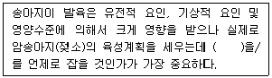
- 초산월령
- 최고비유기
- 건유기
- 사료중급기
(정답률: 69%)
45. 담즙산염(bile salt)의 특징이 아닌 것은?
- 소화효소가 포함되어 있다.
- 지방의 소화를 촉진한다.
- 리파아제(lipase)를 활성화시킨다.
- 비타민 D의 흡수를 돕는다.
(정답률: 51%)
46. 일반전유에 비하여 초유에서의 함량이 낮은 성분은?
- 유당
- 알부민
- 면역 글로불린
- 무지고형물
(정답률: 77%)
47. 가용무질소물(NFE)에 해당되는 것은?
- 단백질
- 지방
- 섬유소
- 전분
(정답률: 58%)
48. 산란계 사육 시 지방계(脂肪鷄) 발생을 방지하는 요령이 아닌 것은?
- 산란계 기별사양을 실시한다.
- 다산계를 선택한다.
- 녹사료를 급여한다.
- 케이지 사양을 실시한다.
(정답률: 74%)
49. 사료의 부피를 줄이며 사료섭취량을 높이기 위해 가루 사료를 고온·고압 하에서 단단한 알맹이 사료로 만든 다음 이를 다시 거칠게 분쇄하여 만든 사료는?
- 가루사료
- 단미사료
- 크럼블사료
- 큐브사료
(정답률: 79%)
50. 100g이 glucose가 완전산화되어 에너지를 발생시키는 과정에서 다음 식을 참고하여 대사수의 양을 구하면 얼마인가?
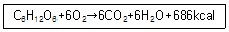
- 42g
- 60g
- 100g
- 200g
(정답률: 60%)
51. 이상적인 육용형 돼지의 체형이 아닌 것은?
- 체장이 길고 체심이 깊다.
- 어깨가 좁고 흉폭이 얕다.
- 발목이 짧고 탄력이 있다.
- 엉덩이가 넓고 깊다.
(정답률: 77%)
52. 갈색 산란계의 산란초기 사료의 칼슘함량이 가장 적당한 것은?
- 0.7~1.0%
- 1.5~1.8%
- 3.5~3.7%
- 5.5~5.9%
(정답률: 61%)
53. 소의 체지방이 닭의 체지방보다 경도가 높은 이유는?
- 지방 내 프로피온산 함량이 높기 때문
- 반추미생물이 탄소수가 홀수인 지방을 합성하기 때문
- 반추위 내에서 발생하는 수소이온이 지방산의 이중결합을 포화시키기 때문
- 소 지방의 불포화지방산 함량이 많기 때문
(정답률: 71%)
54. 브로일러 종계의 체중조절을 위해서는 계군 평균체중 조사를 2주령부터 초산 시까지 매주 실시해야 하는데, 계군의 평균체중의 균일성을 알기 위해 사용하는 방법 중 변이계수를 구하는 식은?
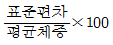
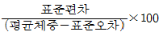
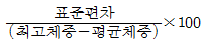
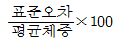
(정답률: 60%)
55. 옥수수와 대두박을 주로 배합한 사료를 돼지에게 급여할 경우 결핍되기 쉬운 제1제한 아미노산은?
- 메티오닌
- 라이신
- 이소류신
- 트레오닌
(정답률: 63%)
56. 필수아미노산이 아닌 것은?
- 알라닌(alanine)
- 라이신(lysine)
- 류신(leucine)
- 발린(valine)
(정답률: 64%)
57. 닭의 강제환우에 대한 설명으로 틀린 것은?
- 산란계의 육성비를 절감할 수 있다.
- 특란 및 대란 생산율을 높일 수 있다.
- 비용을 절감하기 위해서는 초생추를 강제환우 시키는 것이 좋다.
- 계란 가격이 낮은 시기를 피하고 가격이 높은 시기를 맞추어 계란을 생산할 수 있다.
(정답률: 68%)
58. 위(stomach)에서 분비되는 염산의 기능이 아닌 것은?
- 위에서 미생물에 의해 일어나는 발효 및 부패를 억제한다.
- Fe2+의 흡수를 돕는다.
- 단백질을 변성시키고 이당루의 가수분해를 약간 일으킨다.
- 펩신을 펩시노겐으로 만든다.
(정답률: 65%)
59. 반추위 내 휘발성지방산의 흡수속도를 나타낸 순서가 옳은 것은?
- Acetic acid ＞ Propionic acid ＞ Butyric acid
- Propionic acid ＞ Acetic acid ＞ Butyric acid
- Butyric acid ＞ Acetic acid ＞ Propionic acid
- Butyric acid ＞ Propionic acid ＞ Acetic acid
(정답률: 56%)
60. 다음 사료 중 청산 배당체를 함유하고 있는 것은?
- 아마씨깻묵
- 목화씨깻묵
- 들깻묵
- 콩깻묵
(정답률: 66%)
4과목: 사료작물학 및 초지학
61. 사일리지의 특성과 중요성에 대한 설명으로 틀린 것은?
- 겨울철이 긴 우리나라에서는 매우 적합한 조사료의 저장 및 공급형태이다.
- 양건 건초에 비하여 비타민 D의 함량이 많다.
- 삼출액의 손실을 줄이기 위하여 재료의 수분함량이 매우 중요하다.
- 혐기적인 젖산균 발효를 촉진하기 위하여 밀봉과 답압을 세심하게 한다.
(정답률: 72%)
62. 고속으로 회전하는 종축에 원판이나 원통을 붙이고 그 주위에 원심력이 목초 예취기로, 취급이나 조정이 쉽고 작업 능률이 높으며 쓰러진 목초의 수확이 쉬운 것은?
- 모어 컨디셔너(mower conditioner)
- 왕복형 예취기(sickle bar mower)
- 로터리 예취기(rotary mower)
- 플레일 예취기(flail mower)
(정답률: 69%)
63. 줄기밑동에 비늘뿌리(인경)를 가지며 추위에 강하고 더위에 약하여 높은 산지나 한랭한 지대에 적합한 목초는?
- 켄터키블루그라스
- 이탈리안라이그라스
- 티머시
- 오차드그라스
(정답률: 63%)
64. 다음 중 사료작물 재배 이용에 사용되지 않는 기계는?
- 수확기(Harvester)
- 예취기(Mower)
- 투영기(Projector)
- 곤포기(Baler)
(정답률: 70%)
65. 사료작물의 표준 시비량이 ha당 N:P:K가 각각 200:150:150kg일 경우에, 옥수수 3ha를 재배하려면 소요되는 요소의 양은?
- 약 1000kg
- 약 1300kg
- 약 1600kg
- 약 1900kg
(정답률: 50%)
66. 다음 중 다년생 두과 사료작물은?
- 라디노클로버
- 알사익클로버
- 리드카나리그라스
- 레드톱
(정답률: 52%)
67. 수분 함량이 많은 두과목초를 가축이 다량 섭취하였을 때 발생하기 쉬운 질병으로 옳은 것은?
- 질산중독
- 청산중독
- 목초테타니병
- 고창증
(정답률: 63%)
68. 화본과 작물과 클로버의 혼파초지에서 클로버 우점을 방지하기 위한 방법이 될 수 없는 것은?
- 클로버 식생비율이 높은 곳에서 봄에 일찍 낮게 베거나 강방목을 시킨다.
- 여름철 고온건조기에 방목이나 예취를 하지 않도록 한다.
- 여름철 고온건조기에 질소비료 시용을 피한다.
- 시비와 예취방법으로 클로버가 20 ~ 30% 정도를 차지하도록 유지한다.
(정답률: 37%)
69. 다음 설명의 ( )안에 들어가야 할 내용이 순서대로 옳은 것은?
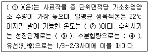
- 옥수수 – 10℃ - 황숙기 – 70%
- 옥수수 – 5℃ - 유숙기 – 50%
- 호밀 – 10℃ - 황숙기 – 70%
- 호밀 – 5℃ - 유숙기 – 50%
(정답률: 75%)
70. 사료용 옥수수의 특징이 아닌 것은?
- 풍매화이며 타화수정을 한다.
- 청예로 이용하는 것이 가장 바람직하다.
- 자웅동주 식물이다.
- 단위면적당 수확량이 많고 사료가치가 우수하다.
(정답률: 64%)
71. 다음 사료작물 중 생산량이 가장 많은 것은?
- 청보리
- 호밀
- 귀리(연맥)
- 수수×수단그리스 교잡종
(정답률: 70%)
72. 옥수수나 수단그라스계 잡종의 후작으로 이용되는 단경기 사료작물에 대한 설명으로 가장 옳은 것은?
- 연맥은 짧은 기간에 많은 수량을 내고 월동이 잘 되므로 중부지방에 알맞다.
- 사료용 유채는 단백질이 높고 토양 중 수분과 질소 함량이 높을 시 수량이 많아지므로 건초로 이용하는 것이 가장 좋다.
- 이탈리안라이그라스는 초기생육이 좋고 기호성이 좋으나 월동성이 떨어지므로 주로 남부지방에서 이용된다.
- 유채와 연맥은 서로 토양요구도와 관리 및 이용방법이 다르므로 혼파해서 사용해서는 절대 안 된다.
(정답률: 68%)
73. 초지를 조성할 때 혼파의 장점으로 옳은 것은?
- 재배관리가 쉽다.
- 목초의 이용기간이 짧아진다.
- 고도의 집약재배가 가능하다.
- 균형 잡힌 양질의 목초를 생산할 수 있다.
(정답률: 64%)
74. 초지조성을 위하여 대상지의 토양을 조사한 결과, 토양의 pH가 5.0, 유효인산함량이 23ppm이었다. 이 결과를 기초로 한 초지조성 대상지의 토양개량에 대한 설명으로 가장 올바른 것은?
- 유효인산함량은 적정하므로 인산질비료의 시비가 필요 없다.
- 유효태 인산함량이 높으므로 목초의 정착에 도움을 준다.
- 적정 pH에 해당하므로 두과목초의 성장에 도움을 준다.
- 농용석회와 같은 석회질 자재를 살포하여 토양산도를 교정할 필요가 있다.
(정답률: 66%)
75. 헤이컨디셔너(hay conditioner)는 어떠한 목적으로 사용하는 기계인가?
- 목초를 빨리 마르게 하기 위하여 목초를 으깨는 기계
- 목초를 빨리 마르게 하기 위하여 건초를 뒤집는 기계
- 건조된 목초를 모으는 기계
- 건조된 목초를 압축하여 묶는 기계
(정답률: 56%)
76. 옥수수의 종류 중 키가 크고, 알곡이 굵으며 수량이 많아 사료용으로 가장 널리 재배되는 종은?
- 경립종
- 감립종
- 마치종
- 폭립종
(정답률: 64%)
77. 옥수수 사일리지와 비교한 수수 사일리지의 특징으로 옳은 것은?
- 가축의 기호성이 높다.
- 가소화 영양소 총량이 낮다.
- 건물 소화율이 높다.
- 산성세제불용섬유소(ADF) 함량이 낮다.
(정답률: 64%)
78. 다음은 무엇을 설명한 것인가?
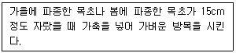
- Drilling
- Establishment
- Topping
- Trampling
(정답률: 69%)
79. 다음 사료 작물 중 가뭄에 견디는 힘이 가장 강한 초종은?
- 화이트 클로버
- 알사익 클로버
- 톨 오트그라스
- 이탈리안 라이그라스
(정답률: 50%)
80. 사료작물을 답리작으로 재배할 때 입모 중 파종에 대한 설명으로 틀린 것은?
- 파종량을 증가시켜야 한다.
- 파종 후 종자가 깊이 묻혀 발아기간이 오래 소요된다.
- 지면이 태양에 직접 노출되지 않아 적정 수분을 유지하기가 쉽다.
- 벼 수확 및 볏짚 수거가 늦어질 경우 어린 싹이 충분히 자라지 못해 겨울을 넘기면서 많이 죽게 된다.
(정답률: 51%)
5과목: 축산경영학 및 축산물가공학
81. 축산경영에서 생산의 탄력성(εp)을 나타낸 식은?
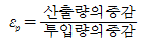
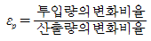
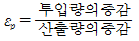
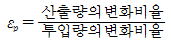
(정답률: 55%)
82. 다음 중 유동자본재에 해당되는 것은?
- 번식돈
- 번식우
- 비육우
- 착유우
(정답률: 68%)
83. 계란의 생산비 절감방안으로 적절하지 않은 것은?
- 경영규모를 확대한다.
- 노동생산성을 낮춘다.
- 산란계의 육성률을 높인다.
- 산란계의 생존율을 높인다.
(정답률: 65%)
84. 도시근교형 낙농경영의 특징이 아닌 것은?
- 경영의 집약도가 다른 경영형태에 비하여 상대적으로 높다.
- 시유용 원유를 생산 공급하는데 유리한 경영형태이다.
- 조사료 생산이 상대적으로 용이하고 조방적인 경영형태이다.
- 토지 면적이 상대적으로 좁고, 착유전업형 경영형태를 이룬다.
(정답률: 74%)
85. 다음 중 축산경영 계획법의 종류에 해당되지 않는 것은?
- 표준계획법
- 간접비교법
- 예산법
- 적정목표이익법
(정답률: 54%)
86. 토지의 기술적 성질로만 옳게 나열한 것은?
- 가동성, 가증성, 괴멸성
- 가경력, 가동성, 괴멸성
- 적재력, 배양력, 가동성
- 적재력, 가경력, 배양력
(정답률: 66%)
87. 한우비육경영에서 농후사료 급여량을 3단위에서 5단위로 증가시키고 총 증체량은 5단위에서 9단위로 증가하였을 때의 한계생산은 얼마인가?
- 1
- 2
- 3
- 4
(정답률: 70%)
88. 자본재의 평가방법 중 자산을 구입할 경우 구입가격과 구입 시 소요되는 제반 비용을 합산하여 평가하는 것은?
- 시가평가법
- 취득원가법
- 수익가평가법
- 추정가평가법
(정답률: 66%)
89. 축산물 유통에서 유통마진율 공식으로 옳은 것은?
- (총판매액-총구입액)/총판매액×100
- (총판매액-총구입액)/총구입액×100
- 총구입액/총판매액×100
- 총판매액/총구입액×100
(정답률: 51%)
90. 계란 1kg의 가격이 1500원이고, 사료 1kg의 가격은 250원일 경우 난사비는?
- 0.17
- 4.0
- 5.0
- 6.0
(정답률: 63%)
91. 다음 설명에 해당하는 유크림은?
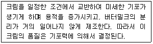
- 휘핑크림
- 플라스틱크림
- 라이트크림
- 발효크림
(정답률: 76%)
92. 고기의 관능평가 항목이 될 수 없는 것은?
- 연도
- 다즙성
- 향미
- 근섬유
(정답률: 62%)
93. 인스턴트 분유의 특성이 아닌 것은?
- 과립화된 분말이다.
- 동일한 보통 분말보다 용적 밀도가 낮다.
- 미립자의 분진이 없다.
- 습윤성(wettability)이 좋다.
(정답률: 46%)
94. 발효유 제조 시 박테리오파지 오염에 대한 대책으로 거리가 먼 것은?
- 혼합균주 및 스타터의 교대사용
- 파지저항성 균주의 사용
- 파지저항성 배지의 사용
- 향균제의 사용
(정답률: 63%)
95. 식육의 식중독 미생물 오염방지를 위한 대책으로 적합하지 않은 것은?
- 철저한 위생관리
- 20~25℃에서 보관
- 충분한 조리
- 적절한 냉장
(정답률: 80%)
96. 식육에 함유되어 있는 일반적인 수분 함량은?
- 30~40%
- 55~60%
- 65~75%
- 90% 이상
(정답률: 65%)
97. 도축 후 사후 해당속도가 가장 빠른 축종은?
- 소
- 닭
- 돼지
- 염소
(정답률: 71%)
98. 유산균의 발효과정에서 생성된 유산에 의해 커드가 형성되는 주요 요인으로 옳은 것은?
- 카세인 등전점에서의 응집
- 마이셀 안정화 작용
- 지방 산화
- 유단백질의 2차ㆍ3차구조 변화
(정답률: 66%)
99. 근육 수축단백질의 상호결합을 도와 수축을 돕는 ‘조절단백질’이 옳게 짝지어진 것은?
- 타이틴-네불린
- 마이오신-액틴
- 트로포마이오신-트로포닌
- 콜라겐-엘라스틴
(정답률: 55%)
100. 근육조직의 결합조직이 아닌 것은?
- 교원섬유
- 탄성섬유
- 세망섬유
- 지방섬유
(정답률: 68%)